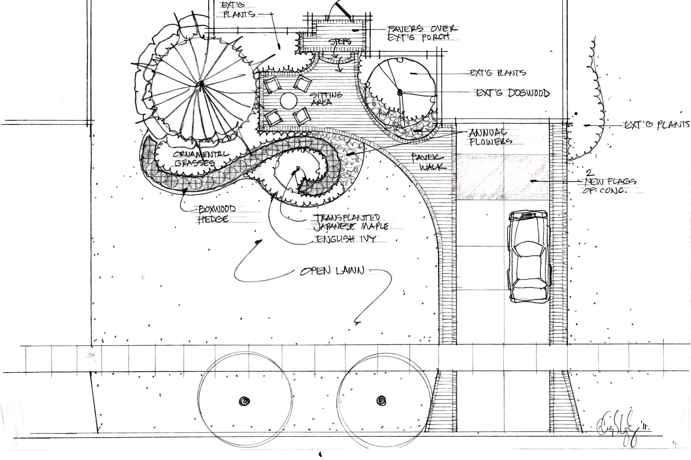
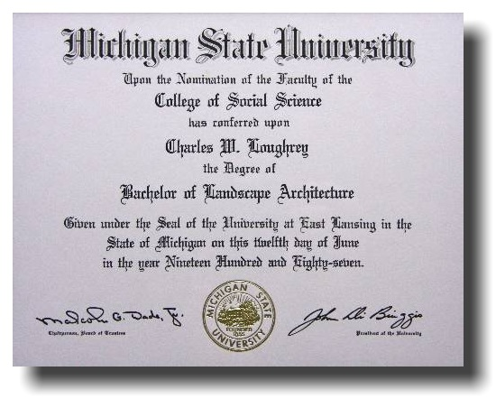
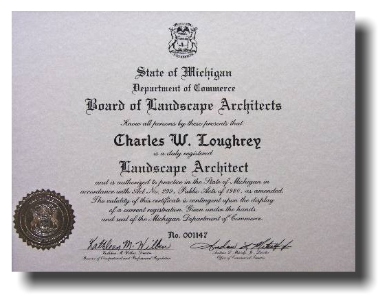
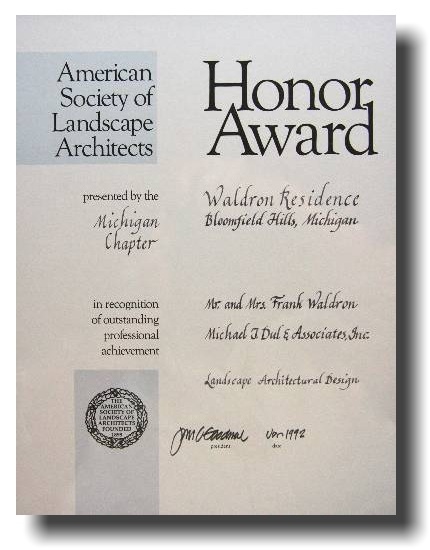
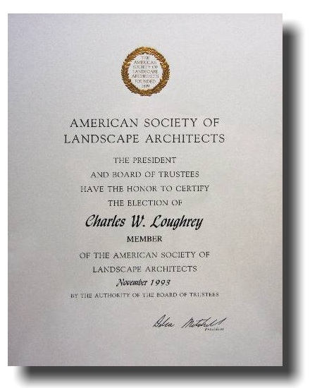
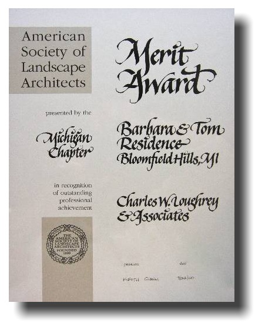

About
Charles Loughrey
RLA, ASLA, GRP. Registered Landscape Architect.

RLA, ASLA, GRP. Registered Landscape Architect.
Michigan native Charles Loughrey decided at the young age of 15 that he wanted to become a Landscape Architect. Since that day, he focused his attention on accomplishing this goal and fulfilling his dream of a life in design.
Upon graduating from Birmingham Groves High School, Charles attended Michigan State University, where he received his Bachelor of Landscape Architecture degree. At the end of his freshman year, he began working with a landscape architectural design firm and continued working with this firm for 6 years after graduation from MSU. In 1992 Charles became a Registered Landscape Architect (RLA) and ventured out to start his own design firm.
Charles grew his practice for 12 years and earned numerous awards for the design of over 100 landscape projects. He was recruited by a major design/build firm to become their Director of Design Sales & Marketing, once again earning numerous awards for landscape design.
During his 5 year tenure with this firm, Charles had an opportunity to add another discipline to his career. He departed and became the Technical Sales Coordinator for a leading commercial roofing manufacturer that made components for constructing living, vegetative rooftops (“Green Roofs”). In 2009 in Atlanta, Charles was in the first Green Roofs for Healthy Cities class to become Green Roof Professionals (GRP). He spent the next couple of years traveling the United States training contractors and promoting the correct construction methods of various types of living roofs.
Charles is now back with his company, Charles Loughrey Design, and is incorporating a career in design that began in 1987 into one of the most innovative and diverse design firms in the industry. His firm specializes in landscape architecture and interior design, as well as designing specialty components and site amenities.




